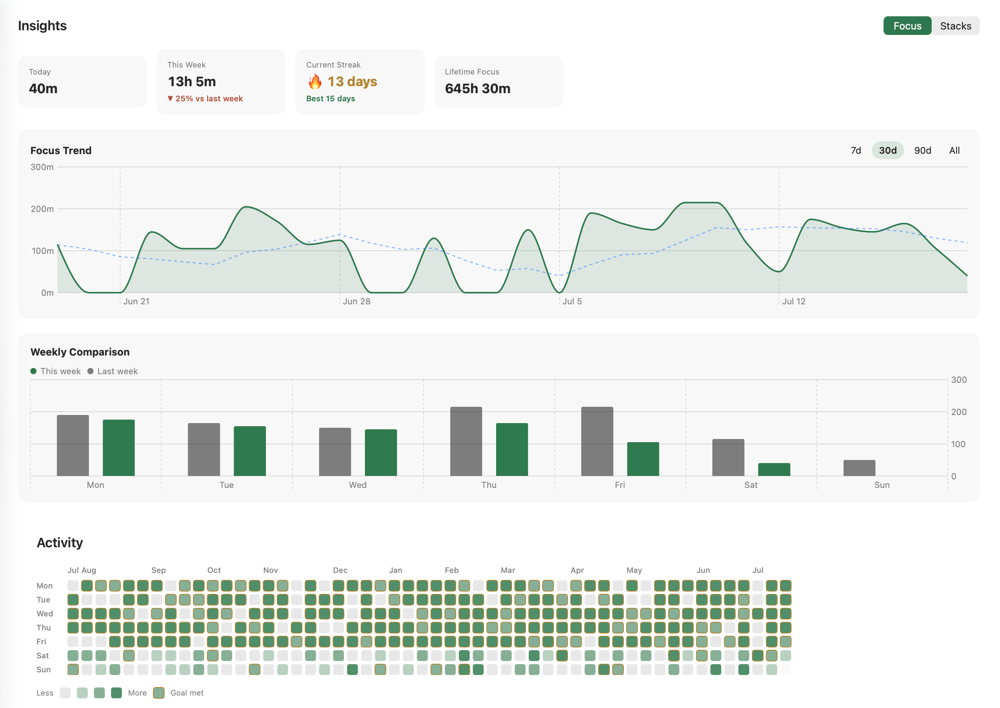
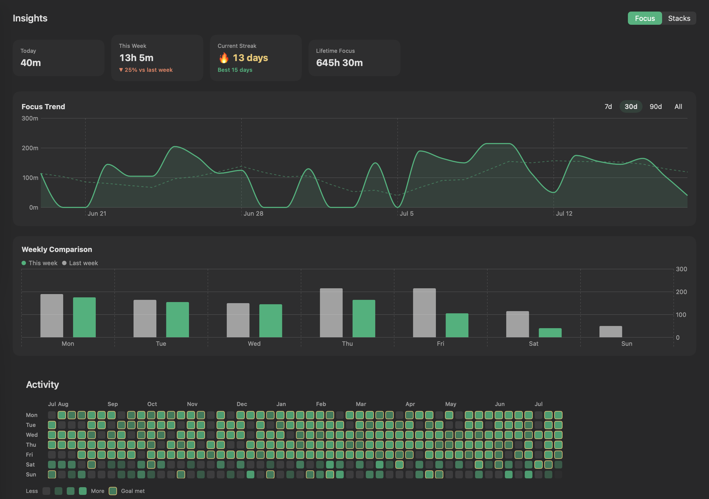

Cloister is a calm focus timer that lives in your Mac's menu bar. Begin a session, let the gold ring close, and watch your focused hours stack — one quiet day after another.
Native menu-bar app · self-updating · your data stays on your Mac
One honest loop, repeated. A completed focus and its break make a stack — the single number that tells you the day went well.
Start a session from the menu bar. The ring closes as your time runs — nothing else on screen asks for you.
When focus ends, take the break it earned. Skip it and the stack doesn't count — the rest is part of the work.
Focus plus break, both finished, is one stack. They gather into streaks, heatmaps, and hours you can look back on.
A single tap opens the timer. The gold ring rides in your menu bar so a glance tells you where you are — no window to hunt for, no dock icon to mind.
The ring and remaining time sit in the bar. Choose the ring, the countdown, or both.
System, light or dark themes. Six session sounds. Custom keyboard shortcuts for every action.
Every stack is written down. Cloister turns them into streaks, a year-long heatmap, and totals worth returning to — the quiet proof that the days added up.


Most timer apps go one of two ways. Some are so bare they only count the minutes; others pile on tags, time tracking, and to-do lists until focus — the whole point — gets lost.
I wanted the space in between: to simply record the time I focused, and let it add up like a ledger worth looking back on. A cloister is the quiet walkway around a courtyard — I wanted that calm in my Mac's menu bar. No account, no cloud; the data stays on my Mac.
Rest is part of the loop, on purpose — you have to recover well to keep focusing well. So I chose a lasting simplicity over a pile of features: something you can keep using for a long time.
The timer that makes Cloister worth using is free forever. Pro unlocks the long view — full history, more presets, and your data in your hands.
Cloister ships as a signed, notarized DMG and a Homebrew cask, and keeps itself up to date — no App Store, no re-downloading.
# add the tap, trust it, install brew tap khy07181/cloister brew trust khy07181/cloister brew install --cask cloister
Homebrew 6.0+ asks you to trust a third-party tap before installing its casks — that's the middle line. After launch this box goes live; today it's a preview.
One purchase unlocks Pro for good — no subscription, no renewals.
Sold through Lemon Squeezy, our merchant of record — taxes and receipts handled.
On your Mac. Cloister stores your sessions locally — there's no server and no account to create just to use it.
macOS 15 (Sequoia) or newer, on Apple Silicon or Intel.
The free tier is the trial — a complete focus timer with no time limit. Upgrade to Pro whenever the long view is worth it.
Yes — within 14 days of purchase, no questions asked. Just email us and it's handled.